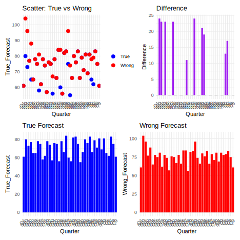
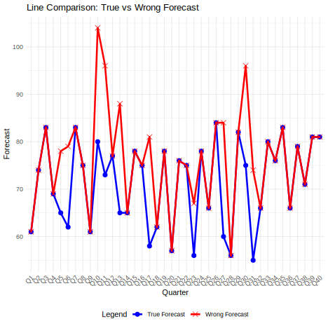
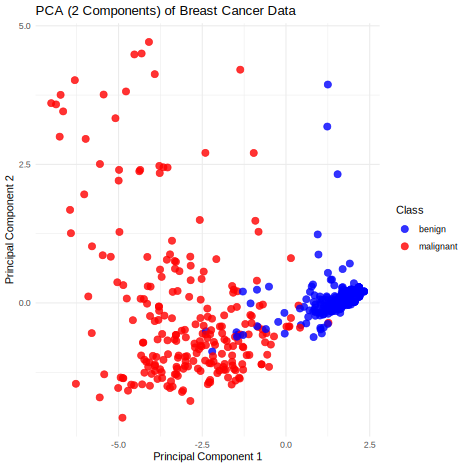

| ID | Name | Department | Salary |
|---|---|---|---|
| 102 | Jane | HR | €3,500 |
Small Errors, Big Consequences: Lessons from Data Mismanagement in Business
Alireza Toutounchi
International Management, M.A., Hochschule Fresenius - University of Applied Science
Abstract
In the era of data-driven decision-making, even minor errors in data management can lead to major financial, operational, and reputational consequences for businesses. This paper explores real-world cases where inaccurate, incomplete, or poorly governed data resulted in substantial setbacks for global organizations. Through an analysis of incidents at companies such as Equifax, Unity Technologies, Samsung, and Knight Capital, we highlight how flawed data inputs, system failures, and human errors have led to multimillion-dollar losses, regulatory penalties, and public mistrust. The study also presents a simulation comparing true and faulty forecasts in business reporting to illustrate how data errors can distort insights and decisions. Finally, key lessons are drawn, emphasizing the critical importance of robust data governance, validation systems, and proactive error detection in maintaining business integrity and resilience.
Keywords: Data, Errors, Consequences, Mismanagement, Analysis
Small Errors, Big Consequences: Lessons from Data Mismanagement in Business
Introduction
What is Data?
The term “data” refers to raw facts, figures, or information collected for reference, analysis, or processing. Data can exist in many forms — numbers, text, images, audio, video, or symbols — and it has no meaning on its own until it is interpreted.
Types of Data:
- Quantitative Data (Numerical)
● Discrete: Countable (e.g., number of students).
● Continuous: Measurable (e.g., height, weight).
- Qualitative Data (Categorical)
●Nominal: Categories with no order (e.g., gender, color).
●Ordinal: Categories with order (e.g., satisfaction level: low, medium, high).
Forms of Data: • Structured (organized in tables like Excel or databases) • Unstructured (like emails, social media, videos) • Semi-structured (like JSON or XML files)
This becomes information when we interpret it — for example, understanding that Jane works in HR and earns €3,500. The most basic division of information is good and bad information. This distinction is crucial in fields like data science, business intelligence, decision-making, and information systems.
Good Information
Good information is accurate, timely, relevant, complete, and reliable. It enhances decision-making and contributes to achieving goals.
- Accuracy – Free from error.
- Timeliness – Up to date and delivered on time.
- Relevance – Applicable to the problem or decision at hand.
- Completeness – Covers all important facts.
- Reliability – Trustworthy and consistent.
Example: A dashboard showing real-time sales performance across regions using verified data sources.
Bad Information
Bad information is inaccurate, outdated, irrelevant, incomplete, or misleading. It leads to poor decisions and potentially serious consequences. 1. Misinformation – False or misleading information shared without harmful intent. 2. Disinformation – Deliberately deceptive information shared with malicious intent. 3. Outdated data – Information that was once correct but no longer reflects the current state.
Example: Using last year’s market trends to make decisions in a rapidly changing economy without checking current data.
The topic of discussion here is bad information, so I will address this issue and examine its implications and delve into it a little deeper.
Bad data can cost you money. It can also damage your reputation, drive good customers away, and negatively affect your entire workforce. Bad data, more often than not, results in bad decisions – and bad decisions can destroy a business. The true costs of bad data are so overwhelming that they are scary. If you do not take data quality seriously, you are at risk of being blindsided by the enormous impact of bad data.
What is Bad Data?
Bad data is any data that is not wholly accurate or doesn’t conform to necessary standards. That can include inaccurate data, incomplete data, conflicting data, duplicate data, invalid data, and unsynchronized data.
How bad data can impact your businesses ?
This is the most important question you should be concerned with to reach the correct answer in terms of proper management and preventing significant damage from the smallest errors. To answer this question, I would say that if the initial errors are recoverable with a small error margin and the project is flexible, it may be possible to prevent the issue with minimal cost and in the shortest possible time. However, if we analyze it on paper, if a project that is already in progress has not been properly analyzed beforehand and its roadmap hasn’t been prepared, even if the error is addressed quickly, the project will still face significant consequences.
How does your business use data?
It outlines two primary functions of business data use—Making decisions and Managing operations—and illustrates the negative consequences of poor data practices under each.
1. Making Decisions
Businesses rely heavily on data to guide strategic, operational, and financial decisions. When data is incomplete, outdated, or incorrect, it leads to:
• Poor decisions: Executives may act on flawed insights, leading to failed investments or ineffective campaigns.
• Missed opportunities: Without timely or accurate data, organizations may overlook market trends or emerging customer needs.
• Internal loss of trust: Employees lose confidence in systems or leadership when data repeatedly proves unreliable.
Example:
A retail company might misinterpret sales data due to duplicate entries, leading to overproduction of a poorly performing product.
2. Managing Operations
Data also plays a key role in the day-to-day functioning of a business—like inventory control, customer support, and supply chain management.
When data is mismanaged, it results in:
• Wasted time & money: Teams spend hours cleaning, verifying, or reconciling data.
• Frustrated customers: Inaccurate customer profiles or slow systems erode user experience.
• External loss of trust: Repeated failures caused by bad data can harm a brand’s reputation in the market.
Example:
An e-commerce platform using outdated shipping data may send packages to the wrong addresses, frustrating customers and increasing return costs.
Conclusion:
Businesses depend on data to inform both decision-making and daily operations. when this data is unreliable, the consequences ripple through every layer of the organization—from strategic planning to customer satisfaction. Mismanagement not only wastes resources but undermines trust both internally and externally. Companies must treat data as a critical asset, investing in quality controls, validation systems, and data governance to mitigate these risks.
● What is Data Mismanagement in Business?
Data mismanagement in business refers to the poor handling, organization, protection, or use of data, leading to negative outcomes for operations, strategy, customers, and compliance.
It includes everything from:
- storing outdated or duplicate records,
- using inaccurate data for decision-making,
- failing to secure sensitive information,
- to lacking proper data governance policies.
Key Aspects of Data Mismanagement:
Common Consequences:
Financial Losses: Wrong data can lead to flawed decisions and costly errors.
Reputation Damage: Loss of customer trust due to data breaches or service failures.
Regulatory Fines: Non-compliance with laws like GDPR or HIPAA due to poor data practices.
Operational Inefficiencies: Wasted resources due to rework, duplication, or delays.
Data mismanagement happens when a business fails to treat data as a strategic asset—resulting in bad decisions, inefficiency, and a loss of trust.
Common Situations Where Data Mismanagement Happens:
1. Lack of Data Governance
• No clear policies on who owns, accesses, or updates data.
• No rules for validation, version control, or lifecycle management. Example: Multiple departments maintain different versions of the same customer list, leading to inconsistencies.
2. Poor Data Quality Controls
• No validation rules during data entry.
• Outdated, duplicated, or missing information is allowed to persist. Example: A typo in a financial spreadsheet leads to misreported revenue figures.
3. Over-Reliance on Manual Processes
• Using spreadsheets instead of databases.
• Lack of automation for cleansing or integration.
Example: Public Health England missed over 15,000 COVID-19 cases in 2020 due to Excel row limits.
4. Siloed Systems and Departments
• Data is stored in separate tools or teams with little communication.
• No unified view of customers, sales, or operations.
Example: Marketing and sales use different definitions for “qualified leads,” causing confusion and missed opportunities.
5. Inadequate Staff Training
• Employees don’t understand how to input or interpret data correctly.
• Data mishandling occurs due to lack of education or awareness.
Example: Call center agents overwrite customer data because they don’t understand the CRM system.
6. Failure to Monitor and Audit
• Businesses don’t regularly check their data for integrity, security, or accuracy.
Result: Errors accumulate silently until they cause major harm.
Data mismanagement happens when businesses treat data casually instead of strategically—leading to chaos, loss, and missed opportunities.
All the consequences of small and large problems in the business field stem from the lack of access to raw and initial data, classified information, data from an incorrect statistical population, and even information from the wrong choice of company or project in the early stages.
To prevent such occurrences, we must first obtain accurate and classified data from the correct statistical population. After that, it’s time to categorize and prioritize the information and classify it. Finally, accurate and precise data analysis comes into play.
The final step is predicting the data and observing the initial results of the forecast. This allows you to start making predictions based on accurate and precise data and forecast the most accurate outcome, taking into account human error and the difficulty of project execution.
This is an example of combining proper management with the use of data analysis, providing the best output as an initial sample to the client.
Key Lessons from Data Mismanagement in Business
1. Financial Losses Due to Data Errors
Inaccurate data can lead to significant financial setbacks. For instance, Unity Technologies experienced a $110 million loss due to incorrect data used in their Audience Pinpoint tool, which affected ad targeting effectiveness.
2. Reputational Damage and Loss of Trust
Data breaches or mismanagement can erode customer trust. Equifax’s 2017 data breach exposed sensitive information of 147 million people, leading to a damaged reputation and legal consequences.
3. Operational Inefficiencies
Poor data quality can disrupt business operations. Uber faced a $45 million loss due to miscalculations in driver payments, stemming from data inaccuracies.
4. Regulatory Non-Compliance
Failure to manage data properly can result in non-compliance with regulations. The Capital Hill Cashgate Scandal in Malawi involved the mismanagement of government funds due to inadequate financial data systems, leading to significant political and financial repercussions.
5. Strategic Missteps
Decisions based on flawed data can misguide business strategies. Samsung reportedly lost $105 billion due to a data entry error that misrepresented financial forecasts, affecting investor confidence.
● This is a real-life example from Samsung based on data mismanagement in business:
1. Samsung (2016) - Battery overheating on Galaxy Note 7 smartphones
Samsung faced a significant issue in 2016 with its Galaxy Note 7 smartphones, which were prone to battery overheating and catching fire. This crisis was largely due to poor data management and quality control in the production process. Initially, the company did not properly analyze the data related to battery safety, which led to design flaws in the device. After launching the product, Samsung failed to act quickly enough, relying on faulty data and assumptions about the safety of the phones, causing them to recall millions of units.
This situation highlights how data mismanagement—whether it’s in the form of faulty testing, incorrect data interpretation, or slow reaction to early warning signs—can lead to major financial losses, reputation damage, and significant customer trust issues. Proper data analysis, accurate forecasting, and quick decision-making could have helped Samsung avoid such a crisis or at least mitigate its effects.
2.Samsung (2021) – Forecasting Entry Error
A human data entry error inflated Samsung’s financial forecasts, which misled investors and contributed to a reported $105 billion market value drop.
Even small manual data errors in critical reports can have billion-dollar consequences.
Since Samsung (and most companies) do not release official and accurate financial forecasts, data on the damage caused by battery malfunctions, etc., as an open dataset, the actual data is not available.
Therefore, I am using a simulated and simplified dataset for Samsung’s forecast, which is solely for comparison between true forecasts and incorrect forecasts with the aim of graphically comparing accurate and inaccurate predictions.
Real analysis should be derived from financial sources, stock reports, or economic news websites (such as Yahoo Finance, Investing.com, or Samsung IR). However, due to the unavailability of real data, I had to create a simulated dataset. Nevertheless, I tried to make the analysis more realistic by extracting some real data on stock or earnings per share (EPS).


This is a tangible example that I experienced years ago :
Some times ago I tried to write a program which is related to the detection and prediction of breast cancer cells.
The program worked in a way that could recognized cancer cells from healthy cells (malignant cells and benign cells) based on color or black-and-white imaging (color spectrum) of the breast and was designed to locate the origin.
The program was connecting to a robot, which would identify the coordinates of cancer cells using 3D imaging and then begin laser therapy.
Why use a robot?
To minimize human error. This method is typically effective for eliminating very small, early-stage tumors (Laser Ablation). The robot was supposed to irradiate the area around each malignant cell with a margin of error between 1 to 7 nanometers.
However, the programming encountered some flaws and failed to accurately identify malignant cells based on color spectrum analysis. As a result, instead of targeting the cancerous cells, the laser mistakenly hit surrounding healthy cells, causing unintended burns. This was a small but clear example of “Small Errors, Big Consequences.”
Some Codes that showing the plot in 2D and 3D :
2D Visualization (PCA on Breast Cancer Dataset) :

3D Visualization (PCA on Breast Cancer Dataset) :
Cl.thickness Cell.size Cell.shape Marg.adhesion Epith.c.size Bare.nuclei
1 5 1 1 1 2 1
2 5 4 4 5 7 10
3 3 1 1 1 2 2
4 6 8 8 1 3 4
5 4 1 1 3 2 1
6 8 10 10 8 7 10Affadative
I hereby affirm that this submitted paper was authored unaided and solely by me. Additionally, no other sources than those in the reference list were used. Parts of this paper, including tables and figures, that have been taken either verbatim or analogously from other works have in each case been properly cited with regard to their origin and authorship. This paper either in parts or in its entirety, be it in the same or similar form, has not been submitted to any other examination board and has not been published.
I acknowledge that the university may use plagiarism detection software to check my thesis. I agree to cooperate with any investigation of suspected plagiarism and to provide any additional information or evidence requested by the university.
Checklist:
[Alireza Toutounchi,] [06/18/2025,] [Koln]